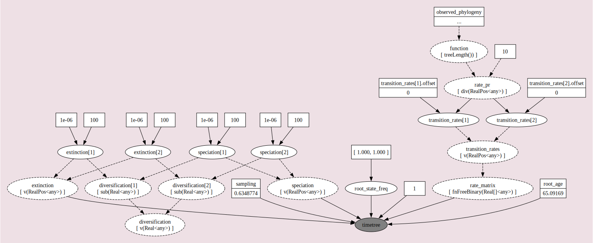
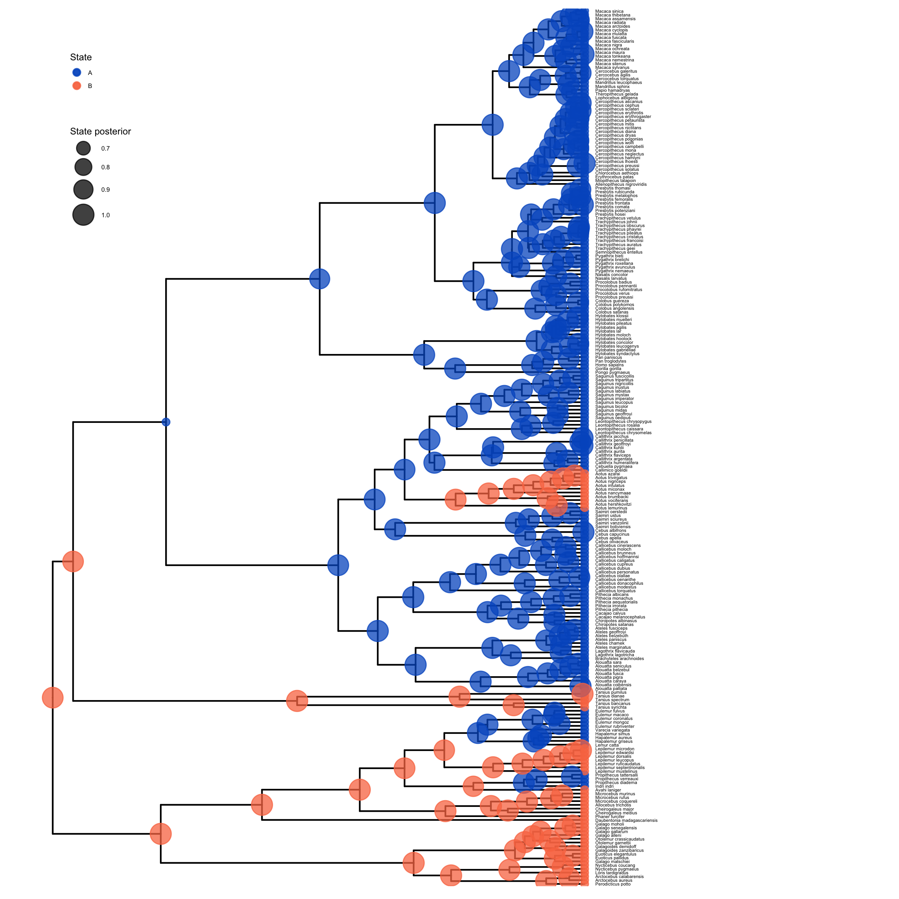
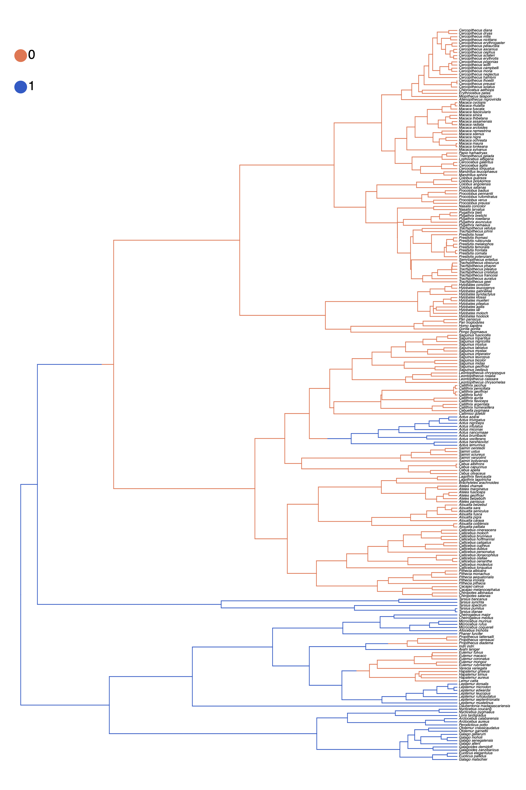
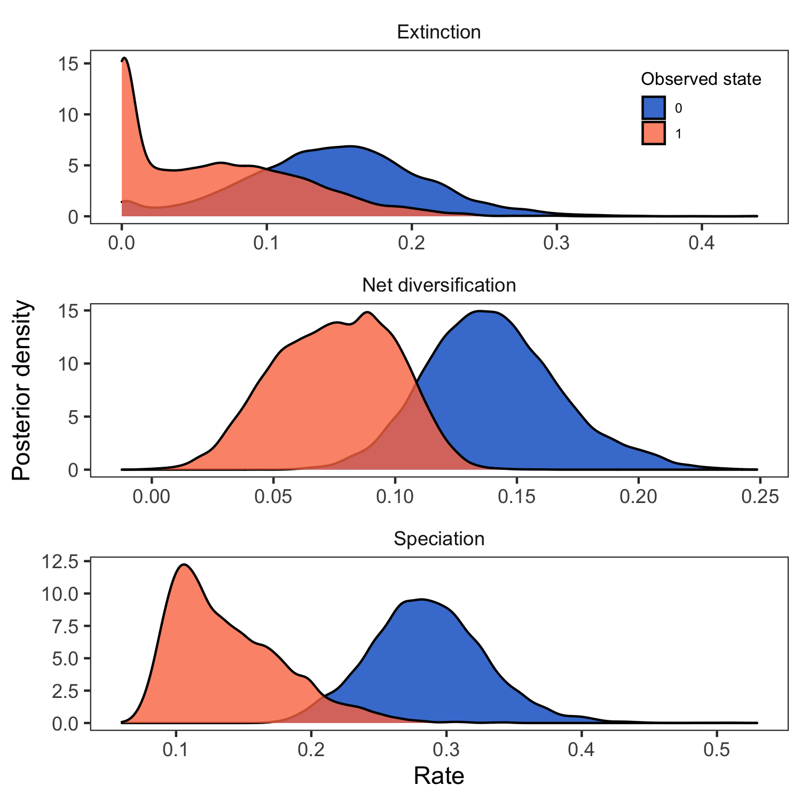

This tutorial describes how to specify character state-dependent branching process models in RevBayes (Höhna et al. 2016). For more details on the theory behind these models, please see the introductory page: Background on state-dependent diversification rate estimation.
This tutorial will explain how to fit the BiSSE and MuSSE models to data using Markov chain Monte Carlo (MCMC). RevBayes is a powerful tool for SSE analyses: to specify HiSSE model, please see State-dependent diversification with HiSSE, for the ClaSSE model, please see State-dependent diversification with the ClaSSE model and for ChromoSSE please see Chromosome Evolution.
We provide the data files which we will use in this tutorial:
0 = diurnal and 1 = nocturnal.0 = group living and 1 = solitary.0 = monogamy, 1 = polygyny, 2 = polygynandry, and 3 = polyandry.Create a new directory on your computer called
RB_bisse_tutorial.Within the
RB_bisse_tutorialdirectory, create a subdirectory calleddata. Then, download the provided files and place them in thedatafolder.
Now let’s start to analyze an example in RevBayes using the BiSSE
model. In RevBayes, it’s called CDBDP, meaning character dependent
birth-death process.
Navigate to the
RB_bisse_tutorialdirectory and execute therbbinary. One option for doing this is to move therbexecutable to theRB_bisse_tutorialdirectory.Alternatively, if you are on a Unix system, and have added RevBayes to your path, you simply have to type
rbin your Terminal to run the program.
For this tutorial, we will specify a BiSSE model that allows for speciation and extinction
to be correlated with a particular life-history trait: the timing of activity during the day.
If you open the file primates_activity_period.nex
in your text editor, you will see that several species like the mantled howler monkey
(Alouatta palliata) have the state 0,
indicating that they are diurnal. Whereas other nocturnal
species, like the aye-aye
(Daubentonia madagascariensis) are coded with 1.
We may have an a priori hypothesis that diurnal species have higher rates of speciation and
by estimating the rates of lineages associated with that trait will allow us to explore this
hypothesis.
Once you execute RevBayes, you will be in the console. The rest of this tutorial will proceed using the interactive console.
For this tutorial, we are assuming that the tree is “observed” and considered data. Thus, we will read in the dated phylogeny first.
observed_phylogeny <- readTrees("data/primates_tree.nex")[1]
Next, we will read in the observed character states for primate activity period.
data <- readCharacterData("data/primates_activity_period.nex")
It will be convenient to get the number of sampled
species num_taxa from the tree:
num_taxa <- observed_phylogeny.ntips()
Additionally, we initialize a variable for our vector of moves and monitors.
moves = VectorMoves()
monitors = VectorMonitors()
Finally, create a helper variable that specifies the number of states that the observed character has:
NUM_STATES = 2
Using this variable allows us to easily change our script and use a different character with a different number of states, essentially changing our model from BiSSE (Maddison et al. 2007) to one that allows for more than 2 states–i.e., the MuSSE model (FitzJohn 2012).
The basic idea behind the model in this example is that speciation and extinction rates are dependent on a binary character, and the character transitions between its two possible states (Maddison et al. 2007).
We start by specifying prior distributions on the diversification rates. Here, we will assume an identical prior distribution on each of the speciation and extinction rates. Furthermore, we will use a log-uniform distribution as the prior distribution on each speciation and extinction rate (i.e., a uniform distribution on the log of the rates).
Now we can specify our character-specific speciation and extinction rate
parameters. Because we will use the same prior for each rate, it’s easy
to specify them all in a for-loop. We will use a log-uniform distribution as a prior
on the speciation and extinction rates. The loop also allows us to apply moves to each
of the rates we are estimating and create a vector of deterministic nodes
representing the rate of diversification ($\lambda - \mu$) associated with each
character state.
for (i in 1:NUM_STATES) {
### Create a loguniform distributed variable for the diversification rate
speciation[i] ~ dnLoguniform( 1E-6, 1E2)
moves.append( mvScale(speciation[i],lambda=0.20,tune=true,weight=3.0) )
### Create a loguniform distributed variable for the turnover rate
extinction[i] ~ dnLoguniform( 1E-6, 1E2)
moves.append( mvScale(extinction[i],lambda=0.20,tune=true,weight=3.0) )
diversification[i] := speciation[i] - extinction[i]
}
The stochastic nodes representing the vector of speciation rates and vector of
extinction rates have been instantiated. The software assumes that the rate in position [1] of each
vector corresponds to the rate associated with diurnal 0 lineages and the rate
at position [2] of each vector is the rate associated with nocturnal 1 lineages.
⇨ If RevBayes has trouble finding good starting values, then you can initialize the speciation and extinction rate as follows:
speciation[i].setValue( ln(367.0/2.0) / observed_phylogeny.rootAge() )
extinction[i].setValue( speciation/10.0 )
You can print the current values of the speciation rate vector to your screen:
speciation
[ 0.267, 0.160 ]
Of course, your screen output will be different from the values shown above since your stochastic nodes were initialized with different values drawn from the exponential prior.
Next we specify the transition rates between the states 0 and 1:
$q_{01}$ and $q_{10}$. As a prior, we choose that each transition rate
is drawn from an exponential distribution with a mean of 10 character
state transitions over the entire tree. This is reasonable because we
use this kind of model for traits that transition not-infrequently, and
it leaves a fair bit of uncertainty.
Note that we will actually use a for-loop to instantiate the transition rates
so that our script will also work for non-binary characters.
rate_pr := observed_phylogeny.treeLength() / 10
for ( i in 1:(NUM_STATES*(NUM_STATES-1)) ) {
transition_rates[i] ~ dnExp(rate_pr)
moves.append( mvScale(transition_rates[i],lambda=0.20,tune=true,weight=3.0) )
}
Here, rate[1] is the rate of transition from state 0 (diurnal) to state 1 (nocturnal),
and rate[2] is the rate of going from nocturnal to diurnal.
Finally, we put the rates into a matrix, because this is what’s needed by the function for the state-dependent birth-death process.
rate_matrix := fnFreeK( transition_rates, rescaled=false)
Note that we do not “rescale” the rate matrix. Rate matrices for molecular evolution are rescaled to have an average rate of 1.0, but for this model we want estimates of the transition rates with the same time scale as the diversification rates.
Create a variable for the root state frequencies. We are using a flat Dirichlet distribution as the prior on each state. There has been some discussion about this in (FitzJohn et al. 2009). You could also fix the prior probabilities for the root states to be equal (generally not recommended), or use empirical state frequencies.
root_state_freq ~ dnDirichlet( rep(1, NUM_STATES) )
Note that we use the rep() function which generates a vector of length NUM_STATES
with each position in the vector set to 1. Using this function and the NUM_STATES
variable allows us to easily use this Rev script as a template for a different analysis
using a character with more than two states.
We will use a special move for objects that are drawn from a Dirichlet distribution:
append( mvDirichletSimplex(rate_category_prior,tune=true,weight=2) )
All birth-death processes are conditioned on the probability a taxon is sampled in the present. We can get an approximation for this parameter by calculating the proportion of sampled species in our analysis.
We know that we have sampled 233 out of 367 living described primate species. To account for this we can set the sampling probability as a constant node with a value of 233/367.
sampling <- num_taxa / 367
The birth-death process also depends on time to the most-recent-common ancestor–i.e., the root. In this exercise we use a fixed tree and thus we know the age of the tree.
root_age <- T.rootAge()
Now we have all of the parameters we need to specify the full character
state-dependent birth-death model. We initialize the stochastic node
representing the time tree and we create this node using the dnCDBDP() function.
timetree ~ dnCDBDP( rootAge = root_age,
speciationRates = speciation,
extinctionRates = extinction,
Q = rate_matrix,
pi = root_state_freq,
rho = sampling )
Now, we will fix the BiSSE time-tree to the observed values from our data files. We use
the standard .clamp() method to give the observed tree and branch times:
timetree.clamp( observed_phylogeny )
And then we use the .clampCharData() to set the observed states at the tips of the tree:
timetree.clampCharData( data )
Finally, we create a workspace object of our whole model. The model()
function traverses all of the connections and finds all of the nodes we
specified.
mymodel = model(timetree)
You can use the .graph() method of the model object to visualize the graphical model you
have just constructed . This function writes the model DAG to a file
that can be viewed using the program Graphviz ().

mymodel.graph("bisse.dot") in RevBayes after specifying the full model DAG.
Then, the resulting file can be opened in the program Graphviz.For our MCMC analysis, we set up a vector of monitors to record the states of our Markov chain. The first monitor will model all numerical variables; we are particularly interested in the rates of speciation, extinction, and transition.
monitors.append( mnModel(filename="output/primates_BiSSE_activity_period.log", printgen=1) )
Optionally, we can sample ancestral states during the MCMC analysis. We need to add an additional monitor to record the state of each internal node in the tree. The file produced by this monitor can be summarized so that we can visualize the estimates of ancestral states.
monitors.append( mnJointConditionalAncestralState(tree=timetree,
cdbdp=timetree,
type="Standard",
printgen=1,
withTips=true,
withStartStates=false,
filename="output/primates_BiSSE_activity_period_anc_states.log") )
Similarly, you may want to add a stochastic character map.
monitors.append( mnStochasticCharacterMap(cdbdp=timetree,
filename="output/primates_BiSSE_activity_period_stoch_map.log",
printgen=1) )
Then, we add a screen monitor showing some updates during the MCMC run.
monitors.append( mnScreen(printgen=10, speciation, extinction) )
With a fully specified model, a set of monitors, and a set of moves, we
can now set up the MCMC algorithm that will sample parameter values in
proportion to their posterior probability. The mcmc() function will
create our MCMC object:
mymcmc = mcmc(mymodel, monitors, moves, nruns=2, combine="mixed")
Now, run the MCMC:
mymcmc.run(generations=5000, tuningInterval=200)
If we sampled ancestral states during the MCMC analysis, we can use the RevGadgets (Tribble et al. 2022) R package
to plot the ancestral state reconstruction.
First, though, we must summarize the sampled values in RevBayes.
To do this, we first have to read in the ancestral state log file. This uses a specific function called readAncestralStateTrace().
anc_states = readAncestralStateTrace("output/primates_BiSSE_activity_period_anc_states.log")
Now, we can write an annotated tree to a file. This function will write a tree with each node labeled with the maximum a posteriori (MAP) state and the posterior probabilities for each state.
anc_tree = ancestralStateTree(tree=T,
ancestral_state_trace_vector=anc_states,
include_start_states=false,
file="output/primates_BiSSE_anc_states_results.tree",
burnin=0,
summary_statistic="MAP",
site=1)
Similarly, we compute the maximum a posteriori (MAP) stochastic character map.
anc_state_trace = readAncestralStateTrace("output/primates_BiSSE_activity_period_stoch_map.log")
characterMapTree(observed_phylogeny,
anc_state_trace,
character_file="output/primates_BiSSE_activity_period_stoch_map_character.tree",
posterior_file="output/primates_BiSSE_activity_period_stoch_map_posterior.tree",
burnin=0.1,
reconstruction="marginal")
To visualize the posterior probabilities of ancestral states, we will use the RevGadgets (Tribble et al. 2022) R package.
Open R.
RevGadgets requires the ggtree package (Yu et al. 2017).
First, install the ggtree and RevGadgets packages:
install.packages("devtools")
library(devtools)
install_github("GuangchuangYu/ggtree")
install_github("revbayes/RevGadgets")
Run this code (or use the script plot_anc_states_BiSSE.R):
library(ggplot2)
library(RevGadgets)
# read in and process the ancestral states
bisse_file <- paste0("output/primates_BiSSE_activity_period_anc_states_results.tree")
p_anc <- processAncStates(bisse_file)
# plot the ancestral states
plot <- plotAncStatesMAP(p_anc,
tree_layout = "rect",
tip_labels_size = 1) +
# modify legend location using ggplot2
theme(legend.position = c(0.1,0.85),
legend.key.size = unit(0.3, 'cm'), #change legend key size
legend.title = element_text(size=6), #change legend title font size
legend.text = element_text(size=4))
ggsave(paste0("BiSSE_anc_states_activity_period.png"),plot, width=8, height=8)

plot_anc_states_BiSSE.R.Next, we also want to plot the stochastic character map.
Use the script plot_simmap_BiSSE.R.

plot_simmap_BiSSE.R.Our MCMC analysis generated a tab-delimited file called primates_BiSSE_activity_period.log that contains
the samples of all the numerical parameters in our model.
Again, we will use the RevGadgets (Tribble et al. 2022) R package, which allow you to generate plots and
visually explore the posterior distributions of sampled parameters.
Open R.
Run this code:
library(RevGadgets)
library(ggplot2)
# read in and process the log file
bisse_file <- paste0("output/primates_BiSSE_activity_period.log")
pdata <- processSSE(bisse_file)
# plot the rates
plot <- plotMuSSE(pdata) +
theme(legend.position = c(0.875,0.915),
legend.key.size = unit(0.4, 'cm'), #change legend key size
legend.title = element_text(size=8), #change legend title font size
legend.text = element_text(size=6))
ggsave(paste0("BiSSE_div_rates_activity_period.png"),plot, width=5, height=5)

RevGadgets (Tribble et al. 2022) R package. We used the script plot_div_rates_BiSSE.R.Now that you have completed the BiSSE analysis for the timing of activity for all primates,
perform the same analysis using a different character. Your data directory should
contain the file primates_solitariness.nex, which has the
coded states for each species habitat type. This is also a binary character, where the states
are 0 = forest and 1 = savanna.
Complete the BiSSE analysis for habitat type using the same commands given above. Remember it is useful to clear the RevBayes console before starting another analysis. Do this using the
clear()function.While you are setting up your new analysis, substitute the character data file name so that you read in
data/primates_solitariness.nexinstead ofprimates_activity_period.nex.It is important that you remember to also change the output file names.
View the parameter log file in Tracer after your MCMC is complete.
What is the rate of speciation associated with group living (
speciation[1])? What about for solitary lineages (speciation[2])?
Compare the rate estimates
Compare the rates estimated when the activity time is the focal character versus when solitariness is the dependent character. You can do this by opening both files in the same tracer window. If you managed to give all the parameters the same name, it is possible to compare the estimates in the Tracer window by highlighting both files.
Explore the estimates of the various parameters. Are any different? Are any the same?
Why do you think you might be seeing this pattern?
In RevBayes it is trivial to change the BiSSE analysis you did in the exercises above to a multi-state model that is not limited to just
binary characters. That is because the model is effectively the same, just with the variable NUM_STATES changed.
For this final exercise, we will use the MuSSE model (FitzJohn 2012) to estimate the rates of speciation and extinction
associated with the mating system state for each primate lineage.
Your data directory should contain a file called primates_mating_system.nex. This is a four-state
character where the states are: 0 = monogamy, 1 = polygyny, 2 = polygynandry, and 3 = polyandry.
Modify the analysis you completed for the binary state characters in the BiSSE Exercise to accommodate a 4-state character. This means that you must not only change the input data file (
primates_mating_system.nex), but you also need to specifyNUM_STATES = 4. Therate_matrixmust also be modified to accommodate 4 states.It is important that you remember to also change the output file names.
View the parameter log file in Tracer after your MCMC is complete.
What is the diversification rate associated with each state (
diversification)?
Click below to begin the next exercise!